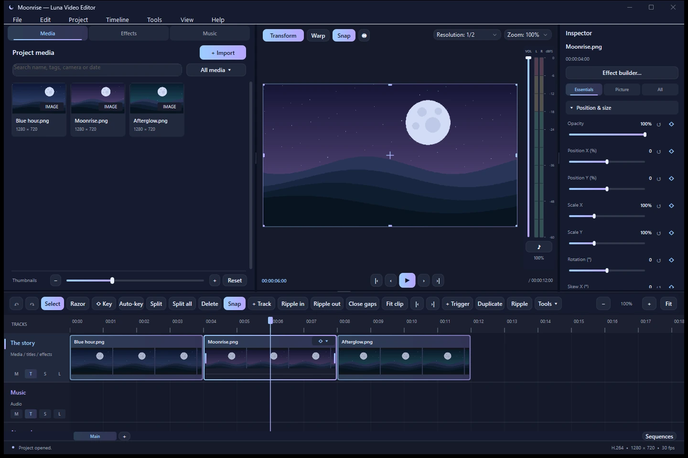
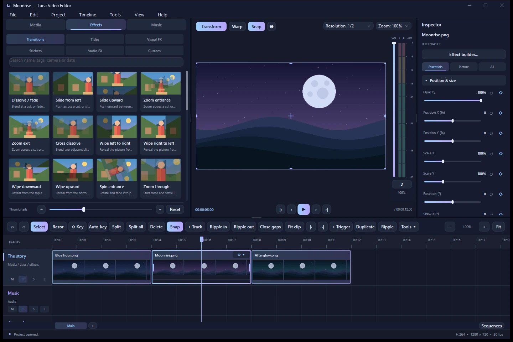
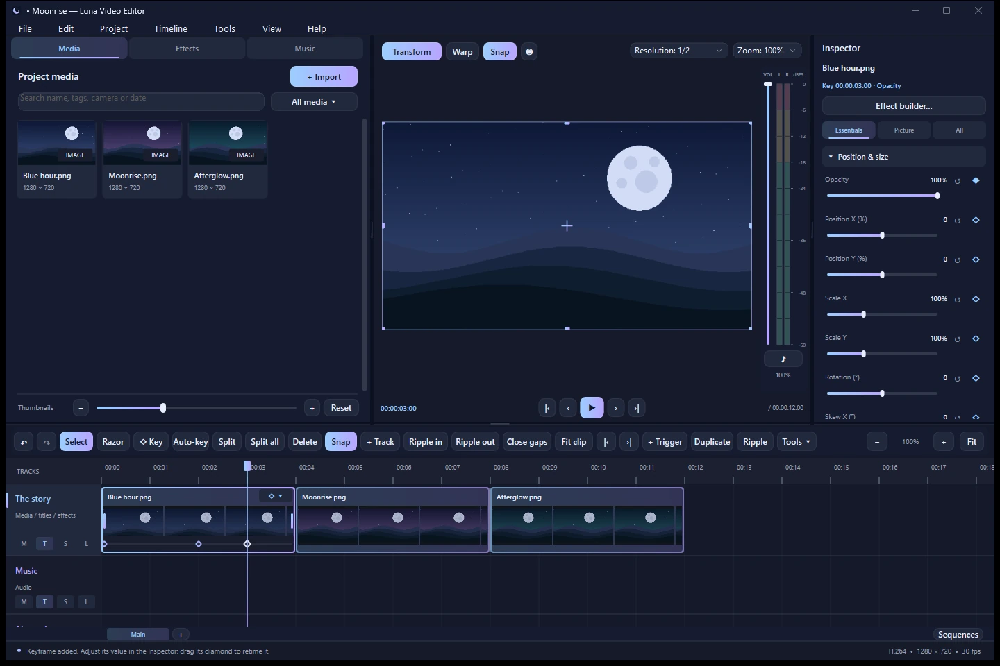
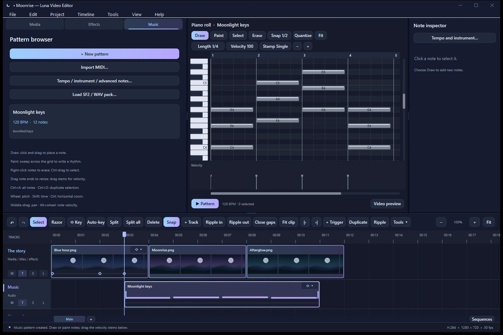

No matching section. Try another word or clear the search.
Your first edit
- Open Luna and choose New project. The editor opens after you create or open a project.
- Open Project > Project options. Choose the canvas size and frame rate for your video. Save the project with Ctrl+S as a
.lunafile. - Choose File > Import media or press Ctrl+I. Pick your videos, audio, and images. Wait for their loading circles to finish before dragging them.
- Drag a visual item onto a visual track. Put music or other audio on an audio track. Drag a clip's body to position it; drag either edge to trim it.
- Move the playhead using the timeline ruler, then press Space to preview. Select a clip to adjust its properties in the Inspector.
- Choose File > Export media or Ctrl+E. Check the Sequence name, choose your output settings, continue, and choose an output file.
Save and export do different jobs. A .luna project stores your editing decisions and source references. Export creates the video or audio file you can share. Keep your original source files available when reopening a project.
Install and save
The Windows x64 installer defaults to Program Files\Highpok Team\Luna Editor and requests administrator permission. Start Luna from its shortcut. Each Windows user's installed preferences and recent-project history live under %LOCALAPPDATA%\Luna.
For the portable version, extract the entire ZIP and open Luna.exe. Keep its codecs, soundfonts, and instruments folders together. Put the portable folder somewhere writable so Luna can remember preferences. Windows N editions need Microsoft's Media Feature Pack.
Use Ctrl+S regularly. Older .luma projects still open; their first Save offers a .luna destination, preserving the older file. Save As can create another project copy. Saving a project does not copy all its source media into the project file.
Automatic backups are configured in Edit > Recovery and library preferences. The startup project menu offers Recover a backup. Recover a useful version, inspect it, and save it with a clear name before continuing.
Workspace
- Media holds imported video, audio, and images. The thumbnail-size slider changes the gallery density. Double-click a ready source to inspect it before placing it.
- Effects holds bundled transitions, titles, visual effects, stickers, and audio effects. These generated items do not clutter the Media library.
- Music provides the pattern creator and piano roll.
- Preview shows the active sequence or an independently opened source. Resolution and zoom are separate controls: resolution affects preview work, while zoom changes your viewing size.
- Inspector edits the selected clip. Its available controls depend on that clip's type. With multiple clips selected, it edits the active item.
- Timeline arranges clips on tracks. Sequence tabs at the bottom switch between timelines in the same project.
Drag panel dividers to resize the workspace. Use View > Appearance for themes, Edit > Keyboard shortcuts for key bindings, and Edit > Preferences for other defaults. View > Reset workspace sizes restores panel dimensions.

Import and organize media
Import one file, several files, or a folder. A loading circle means Luna is still preparing the source. Loading media cannot be dragged onto the timeline. An unavailable source needs attention rather than more waiting.
Search the library and use its filters, bins, ratings, or smart bins to organize larger projects. Project > Smart bins manages saved filters. Double-click a source to open the source viewer; use I and O to mark its range there before using it in an edit.
If you moved or renamed source files, use the media context menu to relink a source, or Tools > Locate missing media in folder. Relinking points the project to the source's current location. It does not undo your file move.
Video clips may contain audio. Use Detach audio from a video clip's context menu when you want a separate audio clip to edit independently.
Edit the timeline
Visual tracks accept video, images, titles, stickers, and visual effects. Audio tracks accept audio, music, and audio effects. Track types constrain where you can drop a clip. Same-track clips cannot overlap; use another compatible lane for layers that need to play together.
- Drag a clip's body to move it. The held drag shows where the clip will land. Snapping helps align clip edges and other timeline points.
- Drag the left or right edge to trim or extend it within source and neighboring-clip limits. Use the Inspector for exact position, duration, speed, or stretch values when supported.
- Place the playhead on the ruler and press Ctrl+B to split a selected clip. The Razor tool is another way to make cuts.
- Use Ctrl-click to toggle clips in a selection, Shift-click to add, or drag a selection box from empty timeline space. Drag a selected clip body to move the selected group together.
- Use the Timeline menu, toolbar, or right-click menu for ripple edits, slip edits, closing gaps, duplication, and other editing operations. Ctrl+Z undoes an edit.
Clicking empty timeline space deselects items; it does not seek. Use the ruler to move the playhead. Middle-drag pans the timeline. Shift+wheel scrolls time, Ctrl+wheel zooms, and the wheel scrolls tracks. Use the track controls to manage targeting, locking, muting, and sync behavior.
Preview and audio levels
Press Space to play or pause, and use the transport controls to step or jump through the edit. The preview resolution dropdown lets you reduce the display workload without changing the exported resolution. Preview zoom changes only how large you see the picture.
Select a visual clip to use its preview transform handles. Move or scale with Transform, or use Warp for corner adjustments. Preview snapping can help with alignment. The Inspector provides exact values for supported transforms.
The vertical monitor-volume slider and preview mute affect listening only. They do not change export loudness. Clip volume and project volume affect the rendered mix. Watch the green/yellow/red meter and adjust the mix rather than relying on a quieter monitor setting to prevent clipping.
For demanding footage or effects, try a lower preview resolution, proxies, or the graphics/cache options. Proxy and graphics preferences control the trade-off between preview workload, preparation time, storage, and quality. Export uses full-resolution sources rather than preview proxies. Hardware acceleration depends on your PC, media, and selected encoder.
Effects and titles
Open the Effects tab and choose a category. Drag a preset toward the timeline and follow the placement preview before releasing it. Visual and audio effects use compatible tracks; select an effect to adjust its parameters and scope in the Inspector.
Transitions attach to a clip edge or a cut between clips. They are not standalone timeline clips. Drop a transition near the intended edge/cut, select the transition overlay, and adjust its duration and settings. A cut between two sources needs suitable source handles for the transition.
Add a title preset, select its clip, and edit the text in the Inspector. Tools > Title text and style opens the extended typography and styling controls, including font, alignment, colors, outlines, shadows, gradients, glow, and depth options. Review readability in the preview at the intended output size.
Stickers can be static or animated. Select their clips to use the supported appearance and timing controls. Right-click items to discover actions relevant to the current selection.

Keyframes
A keyframe stores a property value at a particular time. For example, two opacity keys can fade a title in, and position keys can move it across the screen.
- Select a clip. Use its bottom diamond dropdown to choose the property shown in its keyframe lane.
- Put the playhead at the desired time using the ruler. Press K, use ◇ Key, or click the Inspector property's diamond to add a key.
- Change the property value. Move the playhead to a later time and create another key with a different value. Starting animation after the beginning adds an initial anchor to preserve the earlier appearance.
- Preview the result. Drag a visible diamond to retime it. Select a key to edit its value, or right-click it for easing and advanced curve controls.
Auto-key records supported Inspector changes as keys. With Auto-key off, existing animated channels remain editable. Selecting a diamond focuses that key's property/time; clicking the ruler returns editing to the playhead. Delete removes a selected key. Variables, triggers, and effect controllers can drive a property instead of ordinary direct edits.

Sequences
A sequence is a separate timeline inside one project. Keep a Full edit, Trailer, and Alternate cut together without putting every version onto one timeline.
Use the bottom sequence tabs to switch timelines, the + button to create one, or Project > Sequences to manage, duplicate, rename, or delete them. Duplicate the active sequence when you want a starting point for a different cut; create an empty sequence when you want a fresh arrangement.
Each sequence has its own tracks, clips, markers, actions/triggers, and timeline duration. Imported media and global variables are shared. Canvas resolution, project frame rate, and other project-wide settings are also shared; use another project when you need an independent canvas configuration.
Export renders the currently active sequence only. Check the persistent Sequence field in the export window before continuing. To export a different sequence, cancel, switch to that sequence, and open export again. Sequences are not currently nestable as clips inside another sequence.
Music
- Open Music and choose New pattern. Enter a name, tempo, number of bars, instrument, and optional starter pattern.
- Choose Create pattern. A music clip is added to a compatible audio lane, and the piano roll opens.
- Use Draw to place and move notes, Paint to sweep a rhythm, or Erase/right-drag to remove notes. Choose note length, grid snap, velocity, and a chord stamp in the toolbar.
- Drag note bodies to change time/pitch, drag their right edges to change length, and drag stems in the lower velocity lane to change note strength. Ctrl-click and Ctrl-drag help select notes.
- Use Pattern to audition the music clip. Clicking the piano keyboard auditions individual notes. Return to video preview to hear the music in the edit.
Bundled keys, drums, textures, and synth instruments work immediately. Load SF2 / WAV pack accepts SoundFont 2 or supported WAV packs. You can load a file before creating the pattern and select its preset, or replace the instrument on an existing pattern. Tempo / instrument / advanced notes offers detailed settings and a bulk note list. MIDI import brings in notes; choose the sound you want to play them.
Keyboard commands depend on focus: Ctrl+A/C/V, Ctrl+D, Delete, and arrow keys operate on notes when the piano roll has focus. Click the timeline when you want timeline commands again. Custom instrument paths are referenced by the project; keep those files available.

Custom effects and automation
Use Tools > Effect builder (visual / code) to create a custom effect for a compatible selected item. The visual editor is the initial view. Drag useful blocks into its canvas, connect compatible sockets, and edit their parameters. Switch to the code editor when you prefer typed scripts, completion previews, and debug output.
Start with a small change and preview it before adding more processing. The scripting language is a restricted, typed effect language, not unrestricted Java or a system shell. The visual graph and code controls are tools for custom effects, not a way to run arbitrary external programs.
Project > Global variables manages typed values shared by the project. Timeline triggers are selectable blocks that apply actions without a media clip. A trigger may target a variable, a clip property, or a project property, and can have duration and easing. Keep track of controllers: a driven property may need its variable, trigger, or effect changed instead of direct editing.
Export
- Switch to the sequence you want to deliver and preview its beginning, important cuts, and ending.
- Choose File > Export media or Ctrl+E. The Sequence field stays visible on every tab. It names the timeline that will actually render.
- In Picture, choose a format and set dimensions, frame rate, quality/bitrate, and speed options. Keep the output size and frame rate aligned with your intended delivery.
- In Audio, choose whether to include audio and set bitrate, sample rate, channels, and supported lossless bit depth. Choose an audio-only container when exporting only sound.
- In Range, set begin/end times if you need part of the sequence. End
0means the full duration. Encoder and Acceleration provide codec and hardware options; unsupported combinations may need another setting or software encoding. - Continue to the output browser. The suggested filename includes the project and sequence names. Choose a new output file and let the export finish, then check the exported media.
The selected sequence's effects, titles, automation, and mix are rendered. Monitor volume and preview zoom/resolution do not set output volume, size, or quality. Lowering preview quality is a preview convenience, not a way to lower the final export. Keep source media and project files separate from the output destination.
Keyboard shortcuts
These are the defaults. Edit > Keyboard shortcuts shows the current bindings and lets you search commands, resolve conflicts, and save a shortcut profile.
| Action | Default shortcut |
|---|---|
| New / Open project | Ctrl+N / Ctrl+O |
| Save / Save As | Ctrl+S / Ctrl+Shift+S |
| Import / Export | Ctrl+I / Ctrl+E |
| Play or pause | Space |
| Undo / Redo | Ctrl+Z / Ctrl+Y |
| Split selected clip | Ctrl+B |
| Duplicate selection | Ctrl+D |
| Select / Razor tool | V / C |
| Add clip keyframe | K |
| Select / Deselect timeline items | Ctrl+A / Ctrl+Shift+A |
| Previous / next cut | Ctrl+Left / Ctrl+Right |
| Source In / Out | I / O in the source viewer |
| Match frame | F |
Common problems
- A clip will not drag: let its loading circle finish; check that the destination track accepts that clip type and is unlocked. Same-track clips need free space.
- Media is unavailable: locate/relink the original file or folder. A saved project is not a self-contained archive of all source media.
- The playhead will not move when clicking a lane: use the timeline ruler. Empty lane clicks are for deselecting or starting a selection box.
- The wrong edit exported: check which sequence tab was active and inspect the export window's Sequence field. Cancel and switch sequences before exporting again.
- Preview audio differs from export volume: monitor gain/mute affect listening only. Adjust clip or project gain for the rendered mix.
- Playback stutters: reduce preview resolution, inspect proxy/cache settings, and check the available graphics options. Heavy custom effects and high-resolution sources can still exceed a PC's preview budget.
- An instrument is silent: choose a supported instrument/preset, check notes, velocity and mute/volume, and keep the SF2/WAV pack files available. Try a bundled keys pattern to isolate custom-file issues.
- A property will not edit normally: check whether it is controlled by keyframes, a variable, a trigger, or an effect. Also check track locks and whether the clip supports the property.
If a problem persists, report it through GitHub Issues. Include your Windows version, the action that caused it, and the error text. Share sample media or project content only when you intend it to be public.